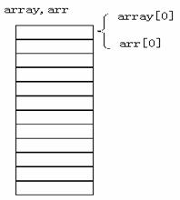
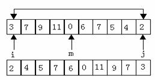

数组名可以作函数的实参和形参。如：
main()
{int array[10];
……
……
f(array,10);
……
……
}
f(int arr[],int n);
{
……
……
}
array为实参数组名，arr为形参数组名。在学习指针变量之后就更容易理解这个问题了。数组名就是数组的首地址，实参向形参传送数组名实际上就是传送数组的地址，形参得到该地址后也指向同一数组。这就好象同一件物品有两个彼此不同的名称一样。

同样，指针变量的值也是地址，数组指针变量的值即为数组的首地址，当然也可作为函数的参数使用。
float aver(float *pa);
main(){
float sco[5],av,*sp;
int i;
sp=sco;
printf("\ninput 5 scores:\n");
for(i=0;i<5;i++) scanf("%f",&sco[i]);
av=aver(sp);
printf("average score is %5.2f",av);
}
float aver(float *pa)
{
int i;
float av,s=0;
for(i=0;i<5;i++) s=s+*pa++;
av=s/5;
return av;
}
算法为：将a[0]与a[n-1]对换，再a[1]与a[n-2] 对换……,直到将a[(n-1/2)]与a[n-int((n-1)/2)]对换。今用循环处理此问题，设两个“位置指示变量”i和j，i的初值为0，j的初值为n-1。将a[i]与a[j]交换，然后使i的值加1，j的值减1，再将a[i]与a[j]交换，直到i=(n-1)/2为止，如图所示。

程序如下：
void inv(int x[],int n) /*形参x是数组名*/
{
int temp,i,j,m=(n-1)/2;
for(i=0;i<=m;i++)
{j=n-1-i;
temp=x[i];x[i]=x[j];x[j]=temp;}
return;
}
main()
{int i,a[10]={3,7,9,11,0,6,7,5,4,2};
printf("The original array:\n");
for(i=0;i<10;i++)
printf("%d,",a[i]);
printf("\n");
inv(a,10);
printf("The array has benn inverted:\n");
for(i=0;i<10;i++)
printf("%d,",a[i]);
printf("\n");
}
对此程序可以作一些改动。将函数inv中的形参x改成指针变量。
程序如下：
void inv(int *x,int n) /*形参x为指针变量*/
{
int *p,temp,*i,*j,m=(n-1)/2;
i=x;j=x+n-1;p=x+m;
for(;i<=p;i++,j--)
{temp=*i;*i=*j;*j=temp;}
return;
}
main()
{int i,a[10]={3,7,9,11,0,6,7,5,4,2};
printf("The original array:\n");
for(i=0;i<10;i++)
printf("%d,",a[i]);
printf("\n");
inv(a,10);
printf("The array has benn inverted:\n");
for(i=0;i<10;i++)
printf("%d,",a[i]);
printf("\n");
}
运行情况与前一程序相同。